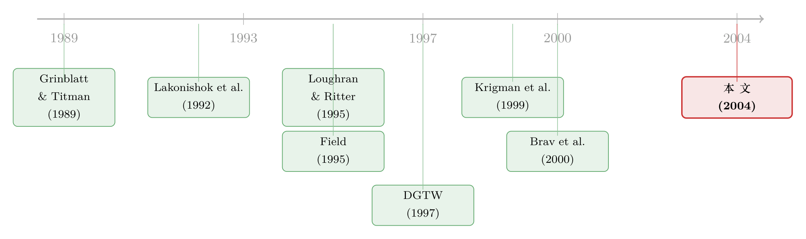

增发那一刻，机构是「韭菜」还是「猎手」？
本文读的是 Gibson, Safieddine & Sonti (2004, JFE)：在 1980–1994 年的 2,912 次股票增发 (seasoned equity offering, SEO) 里，那些被机构买得最狠的发行公司，在增发后一年显著跑赢了被机构卖得最狠的公司；而在规模、账面市值比、动量都对得上的「非增发」对照样本里，这种关系完全消失。作者由此判断：机构能在增发当口，事前 (ex ante) 把「好增发」从「坏增发」里挑出来。
1 一桩看上去「亏本」的买卖
先讲一个让人有点想不通的事实。
整个 1990 年代的金融学文献，几乎是众口一词地告诉你：公司增发新股之后，股票会长期跑输。Loughran 和 Ritter (1995) 那篇著名的《新股之谜 (The new issues puzzle)》就是这么说的；Spiess 和 Affleck-Graves (1995)、McLaughlin 等 (1996) 也都从不同角度印证了同一件事——增发，是一个对老股东、对接盘者都不太友好的事件。直觉上也讲得通：管理层最懂自家公司，他们会挑公司被「高估」的时候来发股票，所谓「择时 (market timing)」。换句话说，谁在增发时买股票，谁就是在替管理层的高估买单。
那么问题来了：按理说最该懂这个道理的，应该是那些一年花掉数十亿美元做研究、养着一整支分析师团队的机构投资者 (institutional investors)。可作者翻开数据一看，却发现了一个尴尬的画面——
机构非但没有躲开增发，反而在增发当口，成群结队地往里冲。
我们看一组它们冲进去的力度。在增发那个季度，发行公司的机构总持股增加了 6.67%（占流通股的百分比），而同期那些规模、账面市值比、动量都匹配的非增发对照公司，机构持股只增加了 0.39%。这个差距，p 值小于 0.001。
这就是全文的张力所在。如果你相信「增发后跑输」是铁律，那机构这个动作就是在主动跳进一个价值毁灭的活动里——它们要么是后知后觉的「韭菜」，要么是被承销商的路演忽悠瘸了。
但作者提醒你：要下「机构很蠢」这个结论，你必须先偷偷假设一件事——机构没有任何选股能力。一旦你松开这个假设，整个故事就可能反过来。
2 把「平均」拆开：增发不是铁板一块
接着，一个自然的问题是：增发公司真的是铁板一块、个个都跑输吗？
未必。Brav、Geczy 和 Gompers (2000) 早就指出，增发后的跑输高度集中在小公司和低账面市值比的公司身上——也就是说，「增发后跑输」从来不是一句对所有发行人都成立的话，而是一个被几类公司拖出来的「平均效应」。
这一拆，就给机构留出了空间。也许机构并不是在闭着眼睛买所有增发，而是在增发的横截面里挑人：它们重仓那些将来会跑赢的发行公司，而对那些注定要沉下去的，则按兵不动甚至减持。如果真是这样，那么把所有增发的机构持股变化「平均」成一个数字，恰恰会把它们的本事抹平、藏起来。
于是真正关键的一步，是给机构强加一个「事后视角」——作者管这叫给机构施加一个先见之明的偏误 (foresight bias)：我们假装站在事后，按机构在增发当口「买入的多少」给公司排个序，再去看这些公司之后到底表现如何。如果机构什么都不懂，那么「买得多」和「之后涨得好」之间不该有任何关系。
3 识别策略：一把叫「对照样本」的尺子
这篇论文方法上的全部分量，都压在一个词上：对照 (control)。
它不是一篇靠工具变量或断点的因果识别论文，而是靠一个构造得极其讲究的匹配非增发样本 (matched non-issuers) 来「净化」掉所有混淆因素。逻辑是这样的：机构在增发公司里加仓、这些公司之后又涨了——这本身证明不了「机构会选股」，因为也许只是机构天然偏好某一类（比如大盘、高动量）的股票，而这类股票本来就要涨。要排除这种解释，你需要一个「影子样本」：一群在增发那一刻，规模、账面市值比、价格动量都和发行公司一模一样、但自己没有在发股票的公司。如果机构在这群「影子」里的加仓，预测不了它们之后的收益，而在真正的发行人里却能预测，那差别就只能来自「增发」这件事本身所释放的信息。
匹配怎么做？作者复刻了 Daniel、Grinblatt、Titman、Wermers（即大名鼎鼎的 DGTW, 1997）的特征排序组合方法，但把关键的一处改成了按季度重排：
- 先用纽交所的断点，把全市场（NYSE/Amex/Nasdaq）按市值分成五组；
- 每个市值组内，再按过去六个月动量分五组，得到 25 个组合；
- 最后在每个组合里，叠加 DGTW 数据库里的账面市值比排名，得到 125 个「市值×账面市值比×动量」组合。
为什么非要改成季度排序？作者举了个很实在的例子：DGTW 原始数据库每年 7 月才更新一次排名。一家 1991 年 5 月增发的公司，用原始库去匹配，配到的是 1990 年 7 月底的特征——足足陈旧 (stale) 了十个月。而增发公司有个共性：发股票之前往往刚经历一波股价猛涨。用十个月前的旧排名去匹配，就会系统性地把它配给一个市值偏小的公司。季度重排，正是为了堵住这个口子。
匹配公司还被加了两道闸：① 在样本公司增发前的五年里，它自己不能是增发者（保证「发行/不发行」这条线划得干净）；② 它在过去五年里不能已经被选作别家的匹配公司（保证对照样本相互独立、统计推断有意义）。
数据上：机构持股来自 CDA Investment Technologies 编制的 Spectrum 数据库，覆盖 1980Q1–1994Q4 共 60 个季度，底层是 SEC 的 13(f) 报告——管理 1 亿美元以上股票的机构，必须按季申报。增发样本来自 Securities Data Corporation，原始 3,848 笔，因 CRSP 缺失、特征排名缺失、匹配失败等剔除后，剩 2,912 笔。收益基准是按 DGTW 三重排序得到的 125 个组合的月度价值加权收益。
（关于增发当口「机构往里冲」这件事的另一面——发行人其实是花钱请投行去「制造需求」的——可参见《多花一笔钱买「需求」：增发时，企业为什么宁愿请投行去吆喝》。）
4 反转：买得最狠的那一摞，真的涨了
铺垫到这里，把刀递上来。
作者按「增发前后机构持股的增加量」把 2,912 家发行公司排成五分位，最低的一档叫低买入 (low)，中间三档叫中等 (moderate)，最高一档叫高买入 (high)。然后看每一档在增发后一年、相对 DGTW 基准的超额收益。
反转就出现在这里：机构买入最多的那一摞发行公司，在增发后一年里，以一个在统计上和经济上都显著的幅度，跑赢了机构买入最少（甚至卖出）的那一摞。 而且这种跑赢不是「借来又还回去」的——作者一路看到增发后第二到第五年，没有发现收益反转，说明这一年的优异表现是站得住的。更难得的是，把机构按类别拆开——共同基金 (mutual funds) 和非共同基金机构分开看——这种「挑得出赢家」的能力在每一类机构里都成立，且统计显著。
而那个被精心构造出来的影子样本呢？什么也没发生。 在匹配非增发公司里，机构持股的增减和它们之后的收益之间，没有那条向上的预测线。这一正一反，是全文最有说服力的一张牌：能预测收益的，不是「机构买了多少」这个动作本身，而是「机构在增发这个特定窗口买了多少」。
那会不会只是个规模效应？毕竟人尽皆知机构偏爱大盘股（Falkenstein, 1996; Gompers & Metrick, 2001），而小盘增发跌得更惨。会不会机构只是买了更大份额的大公司增发，而大公司本来就抗跌？作者把样本按大小盘分开重做，结论顶住了：机构在大小公司里都显著加仓，而且按占流通股比例算，对小发行人的加仓还略多于大发行人；分大小盘后，「高买入档跑赢低买入档」的模式照旧。规模，解释不掉这件事。
5 第二条证据：分析师的「升降级」也站到了同一边
到这里，一个挑刺的读者会问：你怎么知道是机构「事前」就看准了，而不是机构买完之后股价自己走好的？得有第二条独立的、关于「信息」的证据。
作者把目光转向卖方分析师 (sell-side analysts)。它用 IBES 数据库，给每一个机构买入分位组、在增发后的第一和第二个日历季度，算了一个修正比率 (revision ratio)：盈利预测被上调的公司数，减去被下调的公司数，再除以预测总数。
结论又一次整齐地站到了同一边：在增发公司里，机构加仓越多的那一档，增发后两个季度里「上调减下调占总预测」的比率越高。也就是说，机构重仓的那些发行人，紧接着就迎来了分析师更密集的「看好」。
当然，这本身还不算铁证——你完全可以反过来说：是机构持股增加了，分析师才跟着上调预测的（拍机构的马屁）。但作者的杀手锏还是那个对照样本：如果「机构加仓 → 分析师上调」是一条机械的因果，那它在匹配非增发公司里也该出现。可在非增发样本里，机构持股变化和后续分析师预测之间，没有任何正相关。 这道在对照组里「凭空消失」的趋势，把「分析师只是跟着机构走」的解释也堵死了。剩下的最自然的读法就是：机构在增发当口，确实掌握了某种关于公司未来的、领先于市场的信息。
（机构「先于公开消息站好队」的现象，在别的市场也有干净的证据，参见《财报还没发，机构已经站好了队——一份非公开成交簿里的「知情」证据》。）
6 一个容易被忽略的细节：为什么是「增发」？
退一步想：作者为什么偏偏挑增发，而不是随便哪个时点去看机构选股？
因为增发是一家公司一生中，除了 IPO 之外，信息披露最密集的时刻。招股书、路演 (road show)、电话会议，管理层和承销团（包括卖方分析师）会倾尽全力把公司的「故事」讲给外部投资者听。这就制造了一个天然的、信息高度集中的窗口。作者真正想问的，不是「机构平时会不会选股」，而是「在这样一个人人都能听到同一套故事的场合，机构能不能比散户把这套信息用得更好」。
数据给出的答案是：能。机构把「接触管理层的特权」转化成了「跑赢散户的信息优势」。而散户呢？他们是这场交易的对手盘——机构在增发当口从散户手里买走的那些将来会涨的股票，正是散户在事后才发现自己卖早了的那些。这与 IPO 文献里 Field (1995)、Krigman 等 (1999) 的发现一脉相承：机构在新股市场里的买卖，是有预测力的「聪明钱」。
顺带一提，作者还排除了一个机械解释：机构加仓不是因为增发触发了分析师覆盖度的上升。增发公司被覆盖的分析师中位数在增发前后的 −2、−1、0 三个季度里稳定在 3.67 人，均值也只是从 5.09 微升到 5.21。覆盖度没怎么动，机构却大举加仓——这更像是主动的选择，而非被动的跟随。
7 文献脉络
把这篇论文放回它生长的那条藤上，会看得更清楚。
最早的一支，是问「主动管理到底创不创造价值」。Grinblatt 和 Titman (1989, 1993) 用共同基金的季度持仓，找到了毛收益层面主动管理有效的证据；而 Lakonishok、Shleifer 和 Vishny (1992) 看养老金，却得出主动管理跑不赢简单买入持有的结论。值得不值得，悬而未决。
第二支，是「增发后跑输」这条强结论。Loughran 和 Ritter (1995) 立起了「新股之谜」，随后 Spiess 和 Affleck-Graves (1995)、McLaughlin 等 (1996) 接连补强；但 Brav、Geczy 和 Gompers (2000) 又把它拆细，指出跑输只集中在小盘、低账面市值比的公司，Eckbo、Masulis 和 Norli (2000) 甚至从系统性风险下降的角度，给「跑输」做了风险解释。这条结论从来不是没有裂缝的。
第三支，是 IPO 里机构选股的证据。Field (1995) 发现高机构持股的 IPO 后续表现更好；Krigman、Shaw 和 Womack (1999) 发现机构首日大量「翻仓 (flipping)」卖出的 IPO，随后一年表现最差。机构在新股市场里像是有一双「火眼金睛」。
这篇 Gibson、Safieddine 和 Sonti (2004)，正好坐在这三支的交汇处：它把「主动管理价值」的提问，搬到「增发」这个信息最密集的舞台上，借 DGTW (1997) 的特征匹配方法构造对照，给出了机构「事前选股」的直接证据。

8 评论与延伸（Q&A + 研究方向）
(a) 几个可能的疑问
Q：这篇论文到底有没有「因果识别」？还是只是一组相关性？
严格说，它没有外生冲击，不是 DiD/IV/RDD 那一类。它的全部识别力来自一个构造讲究的匹配对照样本：同样的相关性（机构加仓 ↔ 后续收益）在发行人里成立、在特征匹配的非发行人里消失。这是一种「安慰剂式」的论证——用对照组的「零结果」来排除「机构只是偏好某类必涨股票」的混淆。可信，但它依赖匹配把规模/价值/动量之外的混淆也一并吸收掉，这一点是无法完全证明的。
Q：「机构加仓」和「股价上涨」会不会只是机构资金把价格推上去了（价格压力），而非选股能力？
这是最硬的一个替代解释。作者的反驳是时间维度：如果是买入的价格压力，应当在买入期推高、之后反转。但他们在增发后第 2–5 年没看到反转，收益是「持久」的。持久的超额收益更像是基本面信息被正确定价，而非临时的供需失衡。不过，五年无反转本身也有噪声很大的小样本问题。
Q：分析师上调那条证据，会不会就是机构和卖方「一伙的」自我实现？
有这个嫌疑，但同样被对照样本挡住了：若「机构持股↑→分析师上调」是机械因果，它在非发行人里也该出现，可那里没有。所以更可能是机构和分析师各自独立地读到了同一批公司的利好基本面，而不是分析师单纯追着机构的持仓拍马屁。
Q：为什么用六个月动量、还按季度重排，而不直接用 DGTW 现成的年度排名？
因为增发公司发股前通常刚经历一波股价急涨。用每年 7 月才更新一次的陈旧排名匹配，会把一家刚涨完的发行人配给一个市值明显偏小的公司，既漏掉最新动量、又在规模上错配。按季度重排就是为了让「匹配时点的特征」尽量贴近增发当口的真实状态。
Q：样本停在 1994 年，今天还成立吗？
这是个真问题。1980–1994 年是 13(f) 机构持股从低位快速抬升的年代，机构信息优势可能更大。如今被动投资、指数化、Reg FD（公平披露）之后，「增发路演里的私有信息」这条渠道大概率被削弱了。结论的外部有效性需要在新样本里重测，不能想当然外推。
Q：这和「增发后整体跑输」矛盾吗？
不矛盾，反而是一种调和。整体跑输是横截面的「平均」；本文说的是机构能在这个平均里挑出会跑赢的那一摞。两者可以同时为真——市场整体对增发定价偏高，但机构把其中被低估的那部分挑走了。
(b) 几个可能的研究问题与提案
1. 把同样的逻辑搬到公司债增发 / 二次发行上。
【经济故事】股票增发的机构选股能力已被证实，那债券市场呢？公司增发债券（尤其高收益债）时，信息披露同样密集，而债券持有人结构里机构占比更高。能不能用机构在债券发行窗口的持仓变化，预测发行后的信用利差走向？
【可行性】中。需要 eMAXX/保险公司 NAIC 持仓这类债券持有人数据 + TRACE 成交。识别可复刻本文的「匹配非发行人」思路（按评级、久期、行业匹配）。难点在债券二级市场流动性差、持仓数据频率低。
2. 外资机构 vs. 本土机构，谁在增发窗口更「聪明」？ 【经济故事】本文把机构按共同基金/非共同基金拆。一个更有意思的切口是按「地理/信息距离」拆：在增发这种高度本地化的路演场合，外国机构是不是天然处于信息劣势、因而选股能力更弱？这能直接对话「外资是否信息劣势」这条争论。 【可行性】中高。需要带国籍标签的机构持仓（如 FactSet/Ownership）。识别仍用本文的对照框架，按外资/本土分组比较预测力。相关讨论可参见《外资真有「信息劣势」吗？》。
3. Reg FD 前后，机构在增发窗口的选股能力是否被「拉平」了？ 【经济故事】本文的机制是「机构通过路演获得了散户拿不到的私有信息」。2000 年的公平披露规则正是要堵死这条选择性披露渠道。一个干净的检验：以 Reg FD 为时点做 DiD，看增发后「高买入档减低买入档」的收益差是否显著收窄。 【可行性】高。13(f) + SDC + CRSP/IBES 全都现成，样本可延到 2000 年后。Reg FD 提供了相对外生的政策断点，是把本文从「相关性」升级成「准实验」的最自然路径。
4. 散户是不是系统性地站在了机构的对面、并因此受损？
【经济故事】本文反复强调机构在增发当口从散户手里买走了将来会涨的股票。但散户的损失从未被直接量化。能不能用券商层面的散户订单流（如 TAQ 的小单、或某券商内部数据），直接刻画散户在增发窗口的买卖，并算出他们「卖早了」的财富损失？
【可行性】中。需要能区分散户/机构的订单流数据，这是主要瓶颈；近年用 BJZZ 算法识别散户单的做法可借用。
9 我的判断
这篇论文的贡献，在于它用一个极其朴素却极其干净的设计，回答了一个大问题：主动管理到底有没有信息价值？它没有炫技的计量，全部分量压在「对照样本」这一把尺子上——而正是这把尺子，让「机构会选股」这个容易被规模、价值、动量混淆掉的结论，第一次被相对可信地剥离了出来。两条独立证据（后续收益 + 分析师修正）在发行人里成立、在对照组里同时消失，这种「一正一反」的结构，是它最有说服力的地方。
对识别的担忧也很实在。第一，它终究是观察性的，匹配吸收不了的混淆（比如机构和分析师共同响应的某个未观测基本面），原则上仍可能驱动结果——只是这种解释要同时解释「为什么对照组里什么都没有」，会很吃力。第二，正文截断处恰好是收益分位的具体数字，作者在摘要里只说「统计和经济上都显著」，读者无法核对那个幅度到底有多大、t 值几何——这让「经济显著性」这半句话打了折扣。第三，样本停在 1994 年，处在机构化浪潮的上升期，结论能否平移到 Reg FD 与指数化之后的今天，是个真空白。
我最想看到的后续，是把这套对照框架接上一个政策断点（Reg FD 是最现成的那个），把「机构在信息密集窗口的选股能力」从一条相关性，升级成一个准实验里的因果量级；以及，把同样的问题搬到公司债发行和外资持有人上去——在信用市场和跨境信息这两个更不透明的角落里，「聪明钱」到底还聪不聪明，会是更有意思的故事。
参考文献
Brav, A., Geczy, C., Gompers, P. (2000). Is the abnormal return following equity issuances anomalous? Journal of Financial Economics 56, 209–249.
Daniel, K., Grinblatt, M., Titman, S., Wermers, R. (1997). Measuring mutual fund performance with characteristic based benchmarks. Journal of Finance 52, 1035–1058.
Eckbo, B.E., Masulis, R.W., Norli, O. (2000). Seasoned public offerings: resolution of the 'new issues puzzle'. Journal of Financial Economics 56, 251–291.
Falkenstein, E.G. (1996). Preferences for stock characteristics as revealed by mutual fund portfolio holdings. Journal of Finance 51, 111–135.
Field, L. (1995). Is institutional investment in initial public offerings related to long-run performance of these firms? Unpublished working paper, UCLA.
Gibson, S., Safieddine, A., Sonti, R. (2004). Smart investments by smart money: Evidence from seasoned equity offerings. Journal of Financial Economics 72(3), 581–604.
Gompers, P.A., Metrick, A. (2001). Institutional investors and equity prices. Quarterly Journal of Economics 116.
Grinblatt, M., Titman, S. (1989). Mutual fund performance: an analysis of quarterly portfolio holdings. Journal of Business 62, 393–416.
Grinblatt, M., Titman, S. (1993). Performance measurement without benchmarks: an examination of mutual fund returns. Journal of Business 66, 47–68.
Krigman, L., Shaw, W., Womack, K. (1999). The persistence of IPO mispricing and the predictive power of flipping. Journal of Finance 54, 1015–1044.
Lakonishok, J., Shleifer, A., Vishny, R. (1992). The impact of institutional trading on stock prices. Journal of Financial Economics 32, 23–43.
Loughran, T., Ritter, J. (1995). The new issues puzzle. Journal of Finance 50, 23–51.
McLaughlin, R., Safieddine, A., Vasudevan, G. (1996). The operating performance of seasoned equity issuers: free cash flow and post-issue performance. Financial Management 25, 41–53.
Spiess, K., Affleck-Graves, J. (1995). Underperformance in long-run stock returns following seasoned equity offering. Journal of Financial Economics 38, 243–267.